Davenport Model B Support
5-Spindle Automatic Screw Machine
Analytics
Admin
Powered by

aidan
systems
Sign Out
--
Total Turns (30d)
--
Avg Response Time
--
Conversations
--
Active Days
Turns per Day (Last 30 Days)
Performance Breakdown — Active Days
Date
Turns
Avg Total
Avg Agent
Avg Graph
Avg Cite
In Tok
Out Tok
Users
Welcome to Gent Machine Davenport support. Ask about troubleshooting, maintenance, or operation of your Model B machine.
🎤
Send
New Topic
☰ Example Questions
Example Questions
What are the common causes of spindle vibration?
How do I adjust the stock reel tension?
What is the cam roll inspection procedure?
How do I troubleshoot chatter?
What weekly maintenance should I perform?
Ask about this